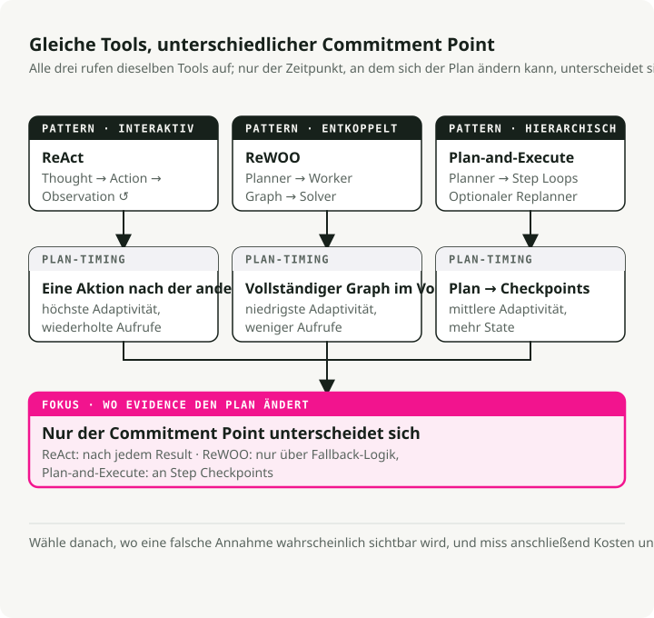
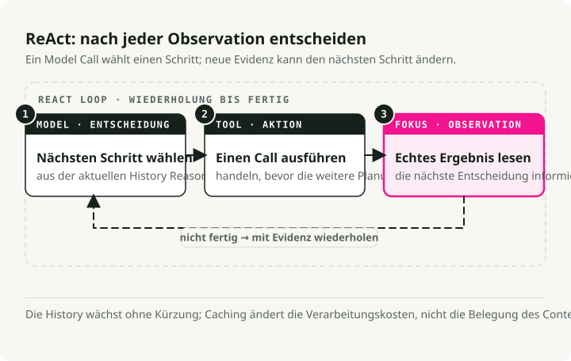
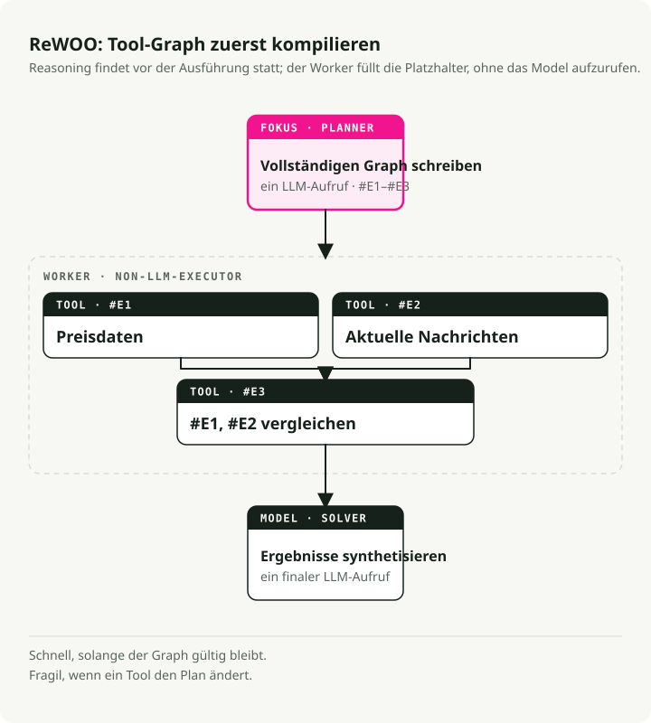
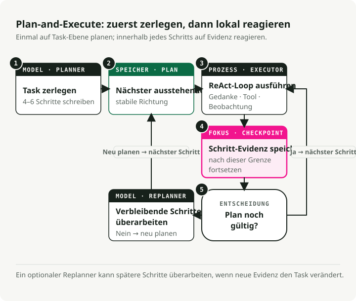
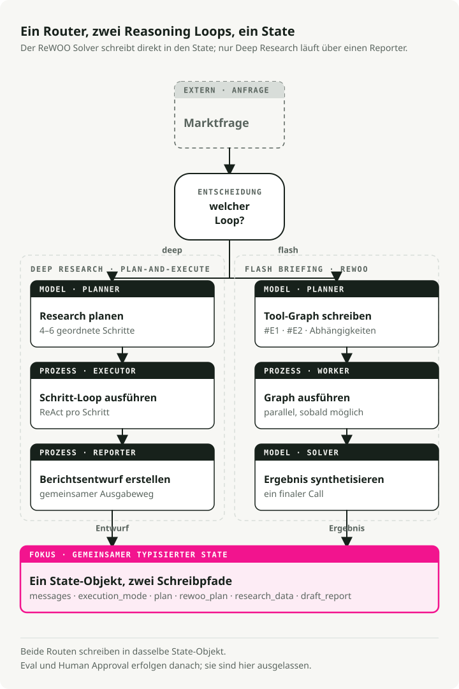

Automatische Übersetzung
Dieser Artikel wurde automatisch aus der englischen Originalversion übersetzt.
Reasoning-Loops für AI Agents im Jahr 2026: ReAct vs ReWOO vs Plan-and-Execute
Teil 1 der Serie Engineering the Agentic Stack
Nützliche AI Agents zu bauen ist heute vor allem Systemdesign, nicht Prompt Engineering. Die wichtigste Einzelentscheidung ist der Reasoning-Loop des Agents: wie das System plant, Tools aufruft, Ergebnisse beobachtet und entscheidet, wann es stoppt.
Dieser Beitrag vergleicht die drei AI-Agent-Loop-Patterns, die man 2026 kennen sollte: ReAct, ReWOO und Plan-and-Execute. Das durchgehende Beispiel ist ein Market Analyst Agent, den ich in LangGraph gebaut habe, mit vollständigem Code auf GitHub.
TL;DR: ReAct ist flexibel, aber teuer. ReWOO ist schnell, wenn der Workflow vorhersehbar ist. Plan-and-Execute passt zu mehrstufigen Analysen. Ein produktiver AI Agent kann pro Anfrage zwischen diesen Reasoning-Loops routen, mit gemeinsamem State und checkpointed LangGraph-Knoten, sodass jede Aufgabe den Loop bekommt, der zu ihrer Form passt.
Warum Reasoning-Loops für AI Agents wichtig sind
Vor einem Jahr ging es vor allem darum, ein LLM mit der richtigen Prompt-Formulierung nützlich zu machen. Heute geht es um Graph-Design: wie Reasoning, Tool-Nutzung und Memory miteinander verdrahtet werden.
Der Reasoning-Loop sitzt in der Mitte dieses Graphen. Er entscheidet, wann das Modell denkt, wann es ein Tool aufruft und wann es stoppt. Wählt man den falschen Loop, verbraucht man zusätzliche Tokens für unnötige Aufrufe, fügt pro Turn Sekunden an Latenz hinzu oder der Agent bricht schon dann, wenn ein Tool etwas Unerwartetes zurückgibt.
Drei Reasoning-Patterns für AI Agents

ReAct: denken, handeln, beobachten, wiederholen
ReAct (Yao et al., 2022) ist das ursprüngliche Pattern für interaktive Agents. Es läuft als Schleife:
- Thought: Der Agent erzeugt einen „Thought“, um das Ziel zu zerlegen und den nächsten Schritt zu planen.
- Action: Basierend auf diesem Thought ruft er ein Tool auf.
- Observation: Der Agent liest das Ergebnis, das sein Verständnis für den nächsten Thought aktualisiert.

Vorteile:
- Grounding in realen Beobachtungen reduziert Halluzinationen.
- Der Agent kann seine Strategie dynamisch ändern, basierend auf dem, was er gerade gesehen hat.
- Das „Scratchpad“ liefert einen Audit-Trail des Reasonings.
Nachteile:
- Die Historie wächst an und wird bei jedem Schritt erneut verarbeitet, daher steigen Latenz und Kosten mit der Länge des Loops.
- Ineffizient, wenn sich Tool-Aufrufe im Voraus planen ließen — genau diese Nische füllt ReWOO.
- Ohne Stop-Bedingung oder Schrittlimit läuft der Loop endlos weiter.
Am besten geeignet für: explorative Aufgaben, Debugging, Situationen, in denen man nicht vorhersagen kann, was als Nächstes kommt.
ReWOO: alles im Voraus planen
ReWOO (Reasoning WithOut Observation) ist ein effizienterer Verwandter von ReAct. Der Trick ist die Entkopplung von Reasoning und Tool-Ausführung: Statt nach jeder Aktion anzuhalten und zu beobachten, plant ReWOO die gesamte Sequenz von Tool-Aufrufen in einem Durchlauf.
- Plan: Ein einzelner LLM-Aufruf schreibt den vollständigen Plan der Tool-Aufrufe und verwendet Variablen-Platzhalter (
#E1,#E2) für Ausgaben, die noch nicht existieren. - Worker: Ein Nicht-LLM-Executor führt die geplanten Tools sequenziell oder parallel aus und füllt die Platzhalter.
- Solver: Ein finaler LLM-Aufruf nimmt die gesammelten Beobachtungen und schreibt die Antwort.

Vorteile:
- Etwa 5x token-effizienter als ReAct, da die wiederholte Thought-Action-Observation-Historie entfällt.
- Geringere Latenz. Die Historie wird nicht bei jedem Schritt erneut übermittelt.
- Der Planner kann separat fine-getuned werden, ohne Live-Umgebung.
Nachteile:
- Fragil, wenn Tools sich unerwartet verhalten. Der Plan geht davon aus, dass alles funktioniert.
- Benötigt vorhersehbare Workflows.
- Ohne explizite Fallback-Logik läuft auch ein fehlerhafter Plan weiter.
Am besten geeignet für: schnelle Snapshots, Status-Checks, Dashboards. Alles, bei dem die Tools sich vorhersehbar verhalten.
Plan-and-Execute: ein Hybrid
Plan-and-Execute liegt zwischen den beiden. Das Paper skizziert eine einfache Aufteilung, die die meisten modernen Agents übernommen haben:
- Planungsphase: Der Agent erzeugt zuerst einen Plan, der die Aufgabe in kleinere Teilaufgaben zerlegt.
- Ausführungsphase: Der Agent führt diese Teilaufgaben anschließend aus.
Das ursprüngliche Paper konzentrierte sich auf Zero-Shot Prompting. Moderne Frameworks wie LangGraph haben daraus ein vollständiges Orchestrierungs-Pattern mit sequenzieller Ausführung und Modellwahl pro Schritt gemacht (ein starkes Reasoning-Modell für die Planung, ein günstigeres für die Ausführung).

Vorteile:
- Hierarchisches Reasoning, das widerspiegelt, wie ein menschlicher Experte ein Projekt zerlegt.
- Re-Planning ist möglich. Man kann pausieren und neu bewerten, wenn das Ergebnis eines Schritts unerwartet war.
- Modell-Spezialisierung. Der Planner kann teuer sein, der Executor günstig.
- Begrenzte Komplexität mit einem klaren Checkpoint nach jedem Schritt.
Nachteile:
- Höhere Latenz als ReWOO, weil Schritte sequenziell laufen.
- Mehr State, der verwaltet werden muss.
- Overkill für One-Shot-Anfragen.
Am besten geeignet für: komplexe mehrstufige Analysen, Research-Aufgaben, alles, was am Ende Synthese braucht.
Wie man einen Reasoning-Loop für AI Agents auswählt
| Feature | ReAct (2022) | Plan-and-Execute (2023) | ReWOO (2023) |
|---|---|---|---|
| Kernphilosophie | Improvisator: handeln und dann anhand des Ergebnisses entscheiden, was als Nächstes zu tun ist. | Architekt: einen vollständigen Bauplan erstellen, ihn ausführen und dann prüfen. | Optimierer: ein „Skript“ mit Variablen schreiben und alles auf einmal ausführen. |
| Workflow | Iterative Schleife: Thought → Action → Observation. | Zweistufig: Phase 1 (Planung), Phase 2 (Ausführung). | Entkoppelt: Planner erzeugt einen Graphen von Tool-Aufrufen; Worker führt sie aus. |
| Anpassungsfähigkeit | Höchste: kann nach jedem einzelnen Tool-Aufruf die Richtung ändern. | Mittel: plant typischerweise erst nach Abschluss eines Satzes von Schritten neu. | Niedrigste: folgt meist dem initialen Skript, sofern der Solver nicht scheitert. |
| Effizienz | Niedrig: hoher Token-Verbrauch; muss für jeden Schritt die gesamte Historie erneut lesen. | Mittel: spart Tokens, weil während der Ausführung nicht erneut „nachgedacht“ wird. | Hoch: minimale LLM-Aufrufe; kann Tool-Ausführung zur Beschleunigung parallelisieren. |
| Am besten für | Open-Ended-Exploration oder Aufgaben mit unvorhersehbaren Ergebnissen. | Long-Horizon-Aufgaben mit stabilem Ziel (z. B. das Schreiben eines Papers). | Strukturierte, wiederholbare Workflows (z. B. Wetter in 5 Städten prüfen). |
1. ReAct: das „Think-as-you-go“-Pattern
So fühlt es sich an: wie ein Mensch, der ein Problem debuggt. „Ich probiere das mal ... okay, das hat nicht funktioniert, dann versuche ich stattdessen etwas anderes.“
Stärke: geht gut mit Unknown Unknowns um. Wenn ein Suchergebnis ein neues Thema offenlegt, kann der Agent im nächsten Schritt umschwenken.
Schwäche: neigt dazu, bei einer fehlgeschlagenen Aktion in Schleifen zu geraten. Das teuerste Pattern beim Token-Verbrauch.
2. Plan-and-Execute: das missionsorientierte Pattern
So fühlt es sich an: wie ein Projektmanager. „Hier ist der 5-Schritte-Plan. Lass uns die Schritte 1 bis 5 ausführen und dann prüfen, ob wir fertig sind.“
Stärke: hält den Agent auf das übergeordnete Ziel fokussiert. Bessere Erfolgsraten bei langen, komplexen Aufgaben.
Schwäche: wenn Schritt 1 auf eine Weise scheitert, die die Schritte 2–5 unbrauchbar macht, arbeitet sich der Agent möglicherweise durch den fehlerhaften Plan, bevor er es bemerkt.
3. ReWOO: das Compiler-Pattern
So fühlt es sich an: wie das Schreiben eines kleinen Programms. „Ich brauche Daten aus Tool A und Tool B, dann kombiniere ich sie in Tool C.“
Stärke: deutlich schneller und günstiger. Der Plan wird einmal mit Platzhaltern kompiliert (#E1 für die Ausgabe des ersten Tools) und dann ohne weitere LLM-Aufrufe ausgeführt, bis zur finalen Synthese.
Schwäche: blind während der Ausführung. Wenn das erste Tool sagt „Ich kann diese Person nicht finden“, führt der Agent trotzdem die nächsten Schritte aus, die davon abhingen, dass diese Person existiert.
Welche Wahl passt wann
- ReAct, wenn der Agent mit einem Nutzer chattet und im Moment reagieren muss.
- Plan-and-Execute, wenn man einen langen, mehrstufigen Job automatisiert, etwa einen Research-Report.
- ReWOO, wenn man eine vorhersehbare Pipeline hat und die API-Kosten um etwa 80 % senken will.
Ein durchgerechnetes Beispiel: der Market Analyst Agent
Um das konkret zu machen, habe ich einen Market Analyst Agent gebaut, der alle drei Patterns in einer Codebasis für eine Marktanalyse-Aufgabe verwendet.
Er nutzt LangGraph zur Orchestrierung. Alle drei Patterns teilen sich dasselbe State-Objekt, sodass der Router pro Anfrage auswählen kann, welches ausgeführt wird:

State-Definition
Der gemeinsame State erfasst alles, was der Agent modusübergreifend benötigt:
class PlanStep(BaseModel):
"""A single step in the research plan."""
step_number: int
description: str
tool_hint: str | None = None
completed: bool = False
result: str | None = None
class UserProfile(BaseModel):
"""Structured user context loaded from long-term memory."""
risk_tolerance: str | None = None
investment_horizon: str | None = None
class AgentState(BaseModel):
"""Main state for the Market Analyst Agent graph."""
# Identity and profile context for memory-backed personalization
user_id: str
user_profile: UserProfile = Field(default_factory=UserProfile)
# Message history with LangGraph's add_messages reducer
messages: Annotated[list, add_messages] = Field(default_factory=list)
# Execution mode (set by router)
execution_mode: ExecutionMode | None = None
# Plan-and-Execute state
plan: list[PlanStep] = Field(default_factory=list)
current_step_index: int = 0
# ReWOO state
rewoo_plan: list[ReWOOPlanStep] = Field(default_factory=list)
# Research results
research_data: ResearchData | None = None
# HITL output
draft_report: DraftReport | None = None
report_approved: bool = False
Pattern 1: Plan-and-Execute-Implementierung
Plan-and-Execute ist die richtige Wahl für Aufgaben, die mehrstufige Synthese benötigen. Der Trick ist, Planung und Ausführung zu trennen: ein starkes Modell für den initialen Plan, dann ein ReAct-Loop, der jeden Schritt mit Spielraum für Reaktionen auf Tool-Ergebnisse ausführt.
So passt es zum Pattern:
- Eine vorgelagerte Planungsphase. Ein einzelner LLM-Aufruf erzeugt den vollständigen Plan als Liste von Schrittbeschreibungen.
- Strukturierte Ausgabe über Schema-Guided Reasoning, das gültiges JSON garantiert.
- Noch keine Tool-Ausführung. Der Planner entscheidet nur, was zu tun ist, nicht wie.
- Menschlich lesbare Schritte. Jeder Schritt ist Text, den ein Executor interpretiert.
# System prompt guides the LLM to think like a research analyst
# creating a strategic plan, not immediate tool calls
PLANNER_SYSTEM_PROMPT = """You are a senior investment research analyst.
Break down stock analysis requests into 4-6 research steps covering:
1. Current price and basic metrics
2. Recent news and announcements
3. Competitor analysis (if relevant)
4. Financial health assessment
5. Risk factors
6. Investment thesis synthesis
Output as JSON with step_number, description, and tool_hint."""
# Schema-Guided Reasoning: Enforce structure with Pydantic
class PlanOutput(BaseModel):
"""Structured output for the planner."""
steps: list[PlanStep] = Field(description="Research steps to execute")
ticker: str = Field(description="The stock ticker being analyzed")
def planner_node(state: AgentState) -> dict:
"""Generate a research plan from the user's request.
This is Phase 1 of Plan-and-Execute: creating the high-level strategy.
"""
# Use a powerful model for strategic planning
llm = ChatAnthropic(model="claude-sonnet-4-5-20250929", temperature=0)
# Apply Schema-Guided Reasoning to guarantee valid plan structure
# This prevents common formatting errors that would break execution
structured_llm = llm.with_structured_output(PlanOutput)
# Context from long-term memory personalizes the plan
profile_context = f"""
User Profile:
- Risk Tolerance: {state.user_profile.risk_tolerance}
- Investment Horizon: {state.user_profile.investment_horizon}
"""
# Single LLM call creates the complete plan
result: PlanOutput = structured_llm.invoke([
SystemMessage(content=PLANNER_SYSTEM_PROMPT + profile_context),
HumanMessage(content=f"Create a research plan for: {last_user_message}"),
])
# State update: Store the plan and initialize tracking
return {
"plan": result.steps, # The sequential steps to execute
"current_step_index": 0, # Start at step 0
"research_data": ResearchData(ticker=result.ticker), # Initialize data container
}
Diese Zeile llm.with_structured_output(PlanOutput) ist Schema-Guided Reasoning (SGR), das ich in einem früheren Beitrag behandelt habe. Das Erzwingen des Schemas PlanOutput bedeutet, dass der Planner immer eine gültige Liste von Schritten zurückgibt. LangGraph nutzt diese strukturierten Ausgaben dann, um deterministischen Kontrollfluss über bedingte Kanten zu steuern.
Pattern 2: ReAct-Ausführung
Sobald der Plan existiert, führt der Executor jeden Schritt als eigenen ReAct-Loop aus. Das ist Phase 2: Jeder Schritt ist klein genug, dass ein Thought-Action-Observation-Zyklus fokussiert bleibt, und der Agent kann auf alles reagieren, was das Tool zurückgibt.
So passt der ReAct-Teil dazu:
- Iterative Ausführung. Ein Schritt nach dem anderen, mit Observation-Feedback.
- Der Thought-Action-Observation-Loop läuft innerhalb von
create_react_agent. - Ergebnisse vorheriger Schritte werden als Kontext in das aktuelle Reasoning eingespeist.
- Der Agent wählt Tools anhand der Schrittbeschreibung aus.
- Er kann seine Vorgehensweise mitten im Schritt ändern, basierend auf dem, was ein Tool zurückgibt.
# Tools available for the ReAct agent to choose from
TOOLS = [
get_stock_snapshot,
get_price_history,
search_news,
search_competitors,
get_financials,
]
def executor_node(state: AgentState) -> dict:
"""Execute the current step using a ReAct agent.
This is Phase 2 of Plan-and-Execute: adaptive execution of each planned step.
Each step runs as a mini ReAct loop until completion.
"""
# Get the current step from the plan
current_step = state.plan[state.current_step_index]
# Build context from what we've learned so far
# This matters: each step builds on previous observations
previous_context = ""
for step in state.plan[:state.current_step_index]:
if step.result:
previous_context += f"\nStep {step.step_number}: {step.result}\n"
# Create a ReAct agent for this step
# LangGraph's create_react_agent implements the full Thought-Action-Observation loop:
# 1. Agent generates a "thought" about what tool to call
# 2. Agent calls the tool ("action")
# 3. Tool returns result ("observation")
# 4. Agent decides: call another tool or finish
react_agent = create_react_agent(
model=ChatAnthropic(model="claude-sonnet-4-5-20250929"),
tools=TOOLS,
)
# Invoke the ReAct loop for this single step
# The agent will loop internally until it completes the step
result = react_agent.invoke({
"messages": [
SystemMessage(content=EXECUTOR_SYSTEM_PROMPT),
HumanMessage(content=f"""Execute Step {current_step.step_number}:
{current_step.description}
Ticker: {state.research_data.ticker}
Previous findings: {previous_context}"""),
]
})
# Extract the final answer from the ReAct agent's message history
# The last message contains the synthesis after all tool calls
updated_plan = list(state.plan)
updated_plan[state.current_step_index] = PlanStep(
step_number=current_step.step_number,
description=current_step.description,
completed=True,
result=result["messages"][-1].content, # Final observation
)
# State update: Mark step complete and advance to next
return {
"plan": updated_plan,
"current_step_index": state.current_step_index + 1,
}
Das ist der Kern des Plan-and-Execute-Flows: Ein starkes Modell schreibt den Plan, dann führt ReAct jeden Schritt mit voller Anpassungsfähigkeit aus.
Pattern 3: ReWOO für schnelle Snapshots
Für kurze Briefings überspringt ReWOO das verschachtelte Reasoning und führt die Tools parallel aus. Der Planner erzeugt vorab ein kompiliertes Skript von Tool-Aufrufen, und der Worker führt es ohne weitere LLM-Beteiligung aus.
Die Struktur:
- Drei Phasen (Planner → Worker → Solver), keine Loops.
- Tool-Aufrufe referenzieren Platzhalter
#E1,#E2für Ergebnisse, die noch nicht existieren. - Kein LLM während der Ausführung. Der Worker führt einfach Tools aus.
- Unabhängige Tools laufen parallel.
- Ein Synthese-Aufruf am Ende über alle Daten auf einmal.
Phase 1: ReWOO-Planner (erstellt den vollständigen Ausführungsgraphen vorab)
class ReWOOPlanStep(BaseModel):
"""A step in the ReWOO plan with variable placeholders.
Key difference from Plan-and-Execute's PlanStep:
- Contains actual tool_name and tool_args (not just description)
- Uses variable references (#E1) for dependencies
"""
step_id: str # e.g., "#E1" - becomes a variable
description: str
tool_name: str # Exact tool to call
tool_args: dict # May contain variable refs like {"price": "#E1"}
depends_on: list[str] = [] # For dependency ordering
result: str | None = None
class ReWOOPlanOutput(BaseModel):
"""Structured output for ReWOO planner."""
steps: list[ReWOOPlanStep] = Field(description="Planned tool calls with variables")
def rewoo_planner_node(state: AgentState) -> dict:
"""Generate a complete plan of tool calls upfront.
This is the key difference from Plan-and-Execute: instead of creating
human-readable step descriptions, we create EXACT tool calls that
the worker will execute blindly.
"""
llm = ChatAnthropic(model="claude-sonnet-4-5-20250929", temperature=0)
# Schema-Guided Reasoning ensures valid tool call specifications
structured_llm = llm.with_structured_output(ReWOOPlanOutput)
ticker = state.research_data.ticker if state.research_data else "UNKNOWN"
# Single LLM call to plan ALL tool executions
result: ReWOOPlanOutput = structured_llm.invoke([
SystemMessage(content=REWOO_PLANNER_PROMPT),
HumanMessage(content=f"""Create a ReWOO plan for: {query}
Ticker: {ticker}
Output tool calls with:
- step_id: Variable name (#E1, #E2, etc.)
- description: What this accomplishes
- tool_name: Exact tool from the list
- tool_args: Dictionary of arguments
- depends_on: List of step_ids this depends on"""),
])
# State update: Store the complete execution plan
# Worker will execute this without any LLM involvement
return {"rewoo_plan": result.steps}
Phase 2: ReWOO-Worker (führt Tools ohne LLM-Reasoning aus)
def rewoo_worker_node(state: AgentState) -> dict:
"""Execute all planned tools in parallel (no LLM calls).
This is the key efficiency: Worker is "dumb" - it just runs tools
according to the plan. No LLM calls = massive token savings.
"""
results = {} # Store results keyed by step_id (e.g., "#E1": "$150.23")
# Execute ALL independent steps in parallel using ThreadPoolExecutor
# This is where ReWOO gets its speed advantage
with ThreadPoolExecutor(max_workers=5) as executor:
futures = {
executor.submit(execute_tool, step): step
for step in state.rewoo_plan
if not step.depends_on # Only independent tools for parallel batch
}
# Collect results as they complete
for future in as_completed(futures):
step = futures[future]
results[step.step_id] = future.result()
# No LLM reasoning here - just store the raw tool output
# State update: Store results for the Solver phase
return {"rewoo_plan": updated_steps}
Phase 3: ReWOO-Solver (synthetisiert alle Ergebnisse in einem LLM-Aufruf)
def rewoo_solver_node(state: AgentState) -> dict:
"""Synthesize all tool results into a flash briefing.
This is the second efficiency gain: Instead of interleaving
LLM calls with tool execution (like ReAct), we make ONE
final synthesis call with all gathered data.
"""
# Build context from ALL tool results at once
tool_results = []
for step in state.rewoo_plan:
if step.result:
tool_results.append(f"### {step.description}\n{step.result}")
context = "\n\n".join(tool_results)
# Single LLM call to synthesize everything
structured_llm = llm.with_structured_output(FlashBriefingOutput)
result = structured_llm.invoke([
SystemMessage(content=REWOO_SOLVER_PROMPT),
HumanMessage(content=f"Create a flash briefing from this data:\n\n{context}"),
])
return {"draft_report": result}
Der entscheidende Unterschied: ReWOO plant jeden Tool-Aufruf vorab mit Platzhaltern (#E1, #E2), führt sie parallel ohne LLM-Aufrufe dazwischen aus und synthetisiert die Ergebnisse in einem einzigen Aufruf am Ende. Das macht es günstig für vorhersehbare Workflows.
Den Code verstehen: wie sich die einzelnen Patterns unterscheiden
Die drei Patterns unterscheiden sich darin, wann und wie sie das LLM aufrufen:
| Pattern | LLM-Aufrufe während der Ausführung | State-Updates | Zentrales Code-Pattern |
|---|---|---|---|
| Plan-and-Execute | 1 für die Planung + 1 pro Schritt | Sequenzieller Abschluss pro Schritt | planner_node() → Schleife: executor_node() → reporter_node() |
| ReAct (innerhalb jedes Schritts) | Mehrere pro Schritt (Thought-Action-Zyklen) | Akkumulierte Message-Historie | create_react_agent() looped intern bis der Schritt abgeschlossen ist |
| ReWOO | 1 für die Planung + 0 während der Ausführung + 1 für die Synthese | Paralleler Abschluss von Tools | rewoo_planner_node() → rewoo_worker_node() → rewoo_solver_node() |
Was sich zwischen ihnen ändert, ist das, was der Planner produziert. Das bestimmt alles nachgelagerte.
-
Plan-and-Execute erzeugt menschlich lesbare Schrittbeschreibungen:
# Planner output (list of PlanStep objects) plan = [ PlanStep( step_number=1, description="Get current price and key financial metrics", tool_hint="get_stock_price" ), PlanStep( step_number=2, description="Search for recent news and earnings", tool_hint="search_news" ), # ... more steps ]Der Executor liest jede Beschreibung und entscheidet, welche Tools aufgerufen werden. Flexibel, aber es kostet einen LLM-Aufruf pro Schritt.
-
ReAct hat keinen vorgelagerten Plan. Es nutzt iteratives Reasoning:
# No planning phase - ReAct works step-by-step with accumulated messages messages = [ HumanMessage(content="Execute Step 1: Get current price"), AIMessage(content="I'll call get_stock_price"), ToolMessage(tool_call_id="1", content="$132.45"), AIMessage(content="Now I need metrics..."), # ... agent continues until step complete ]Mehrere LLM-Aufrufe pro Schritt, mit Anpassung auf Basis von Beobachtungen. Am flexibelsten, am teuersten.
-
ReWOO erzeugt explizite, ausführbare Spezifikationen von Tool-Aufrufen:
# Planner output (list of ReWOOPlanStep objects) rewoo_plan = [ ReWOOPlanStep( step_id="#E1", tool_name="get_stock_price", tool_args={"ticker": "NVDA"} ), ReWOOPlanStep( step_id="#E2", tool_name="search_news", tool_args={"query": "NVDA earnings", "limit": 5} ), # ... all tool calls planned upfront ]Der Worker läuft blind, ohne LLM-Beteiligung. Das gesamte Reasoning steckt im Planner und Solver. Das günstigste der drei.
Memory- und State-Fluss:
- Plan-and-Execute: Der State bewegt sich durch
plan→current_step_index→research_data. - ReAct: Der State akkumuliert im Array
messages(der vollständigen Konversationshistorie). - ReWOO: Der State bewegt sich durch
rewoo_plan, wobei die Felderresultdurch den Worker gefüllt werden.
Alles zusammenführen: den Graph verdrahten
So koexistieren die drei Patterns in einem einzelnen LangGraph-System. Sie teilen sich ein AgentState und leben in einem Graphen. Ein Router wählt pro Anfrage den Pfad, also ist das ein Agent mit drei Ausführungsmodi und nicht drei Agents im Trenchcoat.
LangGraph hält die Verdrahtung deklarativ:
def create_graph(checkpointer=None):
builder = StateGraph(AgentState)
# Add nodes
builder.add_node("router", router_node)
builder.add_node("planner", planner_node)
builder.add_node("executor", executor_node)
builder.add_node("reporter", reporter_node)
builder.add_node("rewoo_planner", rewoo_planner_node)
builder.add_node("rewoo_worker", rewoo_worker_node)
builder.add_node("rewoo_solver", rewoo_solver_node)
# Define edges
builder.add_edge(START, "router")
builder.add_conditional_edges("router", route_after_router, {
"planner": "planner",
"rewoo_planner": "rewoo_planner",
})
# Deep Research path
builder.add_edge("planner", "executor")
builder.add_conditional_edges("executor", route_after_executor, {
"executor": "executor", # Loop back for more steps
"reporter": "reporter", # Done with plan
})
builder.add_edge("reporter", END)
# Flash Briefing path (ReWOO)
builder.add_edge("rewoo_planner", "rewoo_worker")
builder.add_edge("rewoo_worker", "rewoo_solver")
builder.add_edge("rewoo_solver", END)
return builder.compile(
checkpointer=checkpointer,
interrupt_before=["reporter"], # HITL pause for approval
)
Automatische Pattern-Auswahl mit einem Router
Um für jede Anfrage den richtigen Loop zu wählen, habe ich einen Router-Classifier ergänzt. Er nutzt Schema-Guided Reasoning, um die Klassifikation zuverlässig zu halten:
class ExecutionMode(str, Enum):
"""Execution mode for the agent."""
DEEP_RESEARCH = "deep_research" # Plan-and-Execute + ReAct (thorough)
FLASH_BRIEFING = "flash_briefing" # ReWOO (fast, token-efficient)
class RouterOutput(BaseModel):
"""Structured output for the router."""
mode: ExecutionMode # DEEP_RESEARCH or FLASH_BRIEFING
ticker: str
reasoning: str
ROUTER_SYSTEM_PROMPT = """Classify the user's request:
1. **deep_research**: Complex analysis requiring synthesis
- Examples: "Analyze strategic risks", "investment thesis"
2. **flash_briefing**: Quick snapshots, simple data retrieval
- Examples: "quick snapshot", "current price"
Default to deep_research if unclear."""
structured_llm = llm.with_structured_output(RouterOutput)
Damit müssen Nutzer keinen Modus auswählen. Der Router leitet „current price“ selbst an ReWOO und „investment thesis“ an Plan-and-Execute weiter.
Wichtigste Erkenntnisse
- ReAct ist der Standard für Flexibilität, auf Kosten von Tokens und Latenz.
- ReWOO gewinnt bei Geschwindigkeit und Kosten, wenn die Tools zuverlässig sind und die Ergebnisse vorhersehbar.
- Plan-and-Execute ist die richtige Wahl für komplexe Analysen, die am Ende Synthese brauchen.
- Ein Router kann pro Anfrage zwischen ihnen wählen, sodass Nutzer das nicht selbst tun müssen.
- State-Management ist entscheidend. LangGraphs Checkpointing macht Interrupts und Recovery überhaupt erst möglich.
Die vollständige Implementierung, einschließlich Router und gemeinsamem State, liegt im Market Analyst Agent Repository.
Was als Nächstes kommt
Teil 2, AI Agent Memory Architecture in 2026, behandelt kurzfristigen Kontext mit PostgreSQL-Checkpointing und langfristiges Wissen in Qdrant-Vektorspeicher. Das macht Pause/Resume-Workflows und sessionübergreifendes Lernen möglich.
Referenzen
- ReAct: Synergizing Reasoning and Acting in Language Models (Yao et al., 2022)
- ReWOO: Decoupling Reasoning from Observations for Efficient Augmented Language Models (Xu et al., 2023)
- Plan-and-Solve Prompting: Improving Zero-Shot Chain-of-Thought Reasoning by Large Language Models (Wang et al., 2023)
- Market Analyst Agent Repository
Der Code des Market Analyst Agent ist auf GitHub, wenn du mitlesen möchtest.
Serie: Engineering the Agentic Stack
- Teil 1: Reasoning-Loops für AI Agents im Jahr 2026 (dieser Beitrag)
- Teil 2: AI Agent Memory Architecture in 2026 — Checkpoints, Vector Stores und Dokument-Memory
- Teil 3: AI Agent Tool Use in 2026 — MCP, CLI, Skills, Code-Ausführung und ACI
- Teil 4: AI Agent Security in 2026 — Guardrails, Berechtigungen, Sandboxes, HITL und MCP-Scoping
- Teil 5: Long-Running AI Agent Runtime in 2026 — Sessions, Sandboxes, Checkpoints, Harnesses und Deployment-Formen